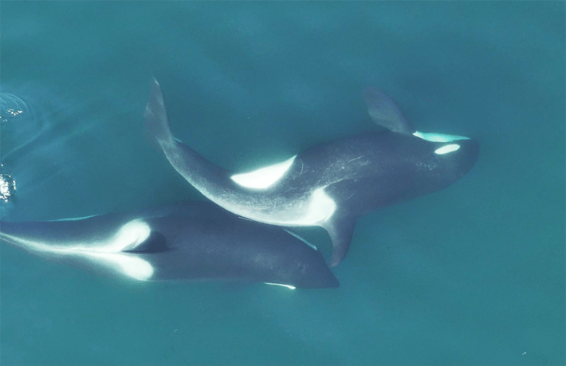

One day last June, scientists from the Center for Whale Research launched a drone camera above a group of orcas swimming off the coast of Washington State. They captured 20 minutes of footage featuring a whale known as Shachi interacting with her young grandson, Nova. The whales gently rolled against each other’s sides and braided their bodies together in what at first seemed like a particularly vivid example of the orcas’ social, tactile nature.
But back on land, reviewing the footage on a bigger screen, the researchers noticed something unexpected: The whales seemed to be holding between their bodies a roughly two-foot-long piece of bull kelp, a type of large seaweed that fringes islands and rocky coastlines in the whales’ home range.
The pair arched into exaggerated S-shapes, deftly rolling the plant matter along their bodies. When the kelp fell out of place, the younger whale would swim back and retrieve it in his mouth, then balance it on his snout and nudge it against his grandmother’s body once more. The researchers eventually realized the whales must be using the kelp stalks as a kind of tool for massage. Whereas most animals manipulate tools with the mouth or appendages, these whales were using their trunks, requiring an impressively precise coordination of the body.
“It highlights how important touch is” in cetaceans.
In a paper published today in the journal Current Biology, the researchers dubbed this behavior “allokelping.” The observations add to scientists’ growing understanding of tool use in non-human animals, and serve as a rare example of tool use among whales and other cetaceans. It also represents what is likely the first time that marine mammals have been spotted building tools: The whales don’t just grab existing pieces of kelp but rather use their teeth to pluck stalks growing in a kelp bed or tangled in a floating mat, using the stalk’s drag and a jerking motion of the head to break off a segment that is suitable for this act of mutual rubdown.
So far, allokelping appears to be unique to the Southern Resident population of orcas, the critically endangered clan of orcas to which Shachi and Nova belong. But Michael Weiss, the research director of the Center for Whale Research, has come to believe that it is integral to their way of being: “This is actually one of their primary social behaviors,” he says.
The next time the researchers launched the drone, they saw other Southern Residents doing something similar. As the 2024 field season rolled on, they accumulated more and more examples of the behavior. And they realized there was evidence of it in the very first flight the team had made back in April with their new drone: Its powerful zoom lens was revealing the particulars of orca life in crisper, finer detail than ever before.
“It highlights how important touch is” in cetaceans, says Ana Eguiguren, a graduate student at Dalhousie University in Canada, “which we haven’t been able to study much,just because of how hard it is, until we were able to see them with drones.” Eguiguren, who was not involved in the recent study, has been investigating social touch in sperm whales.

FAMILY BONDING: Shachi and her grandson Nova use a piece of bull kelp to massage one another. This use of kelp, which the whales break off in pieces, represents the first time cetaceans have been observed creating tools out of existing materials. Credit: Center for Whale Research, NMFS NOAA Permit 27038.
To get a sense of whether the behavior is novel or longstanding, Weiss and his team have combed through drone videos from previous years, zooming in for closeups and examining the lower quality footage frame by frame for evidence of allokelping. “It’s something that you absolutely have to be looking for in these other videos,” Weiss says. “But they’ve been doing this since at least 2019, and probably much longer than that.” The researchers have seen the whales allokelping this year, too, so it seems the behavior was not just a temporary fad.
In the new paper, the researchers analyze 30 bouts of allokelping observed from April through July 2024. The videos feature whales of all ages, both males and females, and members of all three pods—J, K, and L—that make up the Southern Resident community. The videos of J pod, whom the researchers encountered most often during that period, and which includes Schachi and Nova, feature 19 of 25 individuals and members of all six families.
Michael Haslam, an independent researcher who has studied tool use across the animal kingdom and was not involved in the work, says “the amount of time they were able to get, the hours of observation of three different pods,” is “impressive.”
Observations of tool use in cetaceans are sparse. Bottlenose dolphins in western Australia use sponges to protect their snouts as they forage along the sandy bottom, and humpback dolphins may employ sponges in mating displays. Some researchers consider the waves Antarctic orcas generate with their bodies to wash seals and other prey off of ice floes and the bubbles they blow to confuse prey in the water to constitute tools. But cetaceans have never before been observed actively creating tools by modifying an existing object.
“That was a really big piece of the puzzle for us, where we realized there was some kind of intentional fashioning going on,” says Rachel John, a graduate student at the University of Exeter in the United Kingdom who was the first to spot the kelp in the video of Shachi and Nova. “They weren’t just finding these perfect lengths of kelp floating around.”
“Allokelping” is a portmanteau that nods to kelping—an activity in which cetaceans including Southern Resident orcas roll around in kelp beds, lift kelp with their flukes, and drape it across their bodies—and allogrooming—the tendency of many species across the animal kingdom to bathe and groom each other, which contributes to both hygiene and social bonds.
The researchers hypothesize that allokelping serves both of these functions for the Southern Residents, which would both be new purposes for tool use in cetaceans. Allokelping appears to be most common between members of the same matrilineal family or between whales of a similar age, bolstering the view that it contributes to social bonds. Once, the researchers watched two young whales, Tofino and Phoenix, allokelping after a failed hunt. “They were chasing a fish around. They missed it. It swam into the shallows in this kelp forest where they couldn’t get it,” Weiss says. “It almost seemed like, as a consolation, they grabbed some kelp and pulled it out and started allokelping together.”
The team’s evidence that allokelping contributes to hygiene is more tentative. Whales with larger areas of molting skin are more likely to engage in the behavior, but more data are necessary to confirm this pattern, and it’s not clear whether allokelping simply feels good, like scratching an itch, or actually contributes to skin health.
The researchers aim to learn more about the circumstances that motivate the orcas to engage in allokelping, and how young orcas learn to do it. The two youngest Southern Resident calves—born in December 2024 and April 2025—haven’t yet been seen allokelping, but the babies seem very interested in kelp, Weiss says.
If a calf’s mother or sibling is carrying some, he says, “they will just swim up to their mouth and basically just stare, turn sideways and just stare at this piece of kelp and swim along with them.” 
Lead image: Sara Hysong-Shimazu / Shutterstock